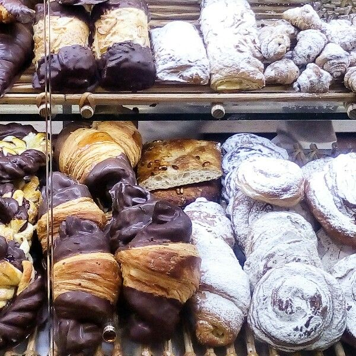

Pastelería Délice
Historia de nuestra tradición
Nuestra gloriosa y más que golosa andadura se remonta a los inicios de 1894, cuando tres socios, Balaguer, Coll y Ripoll fundan Délice, originariamente situada en la calle Jacometrezo, desde, con el tiempo, se traslada a donde ahora se encuentra, en plena Puerta del Sol.
Desde los inicios, esta casa ya marcaba maneras, y buenas formas. Empezando por los productos como la ensaimada, siempre acompañada de un chocolate calentito, embutidos de primera calidad, conservas, el famoso huevo hilado, la sobrasada mallorquina, sabarínas o babarruas, merlitones o bartolillos, torteles o rusos. Y vitrinas llenas de bombones que parecían pintados por algún pintor de palacio. Siguiendo con un gran personal cualificado, camareros de frac que atendían en francés, y confiteros de primera división como Teodoro Bardají, que convirtió el obrador en el paraíso del azúcar.
Tenemos Productos Sin Gluten
@Copyright ASIR 2021
Andrés Ayala Llopis 1ºASIR